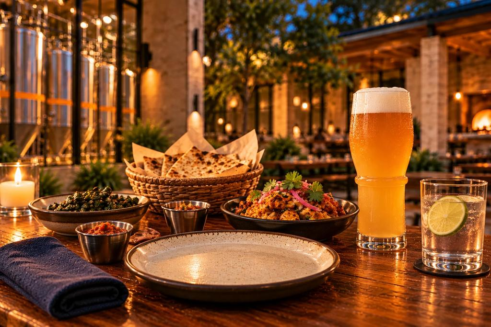

The food
Five dishes.
Fire, corn, chile and curry leaf. India and Mexico at one table.

01
Chicken 65 Totopos
South Indian Chicken 65, crisp and spiced, over thick fried corn totopos with curry leaf, a spoon of crema and a squeeze of lime.
Pairing ideaMexican-Style Lager · Fruit, lime and salt cooler

02
Paneer Tikka Taco
Charred paneer in a warm corn tortilla with salsa, onion, cilantro and lime. The smoke of the tandoor, built on a taqueria base.
Pairing ideaWitbier · Spiced citrus sparkler

03
Goat Birria
Goat, slow-braised in a deep chile adobo and served as small tacos, with a cup of consomme for dipping.
Pairing ideaHefeweizen · Hibiscus and tamarind tea
Image pending: the earlier concept picture showed a taco and has been withdrawn because the dish is no longer a taco.
04
Mango Habanero Gobi
Cauliflower, still unmistakably cauliflower, with a mango and habanero glaze, shared at the table. An appetizer, not a taco. A design idea only: nothing has been cooked or tasted.
Pairing ideaPilsner · Lime and herb cooler

05
Butter Chicken & Roasted Poblano Quesadilla
A crisp griddled tortilla filled with rich butter chicken, roasted poblano and melted cheese, with a cool dip alongside.
Pairing ideaVienna Amber · Cultured dairy, fruit and spice drink

At the table
Made to be shared.
Plates in the middle, a basket to pass, a beer for the table and a zero-proof drink for everyone.
How it begins
Cooked at home first.
Every dish starts in a home kitchen. Tasted, adjusted, tasted again, before anything else is asked of anyone.